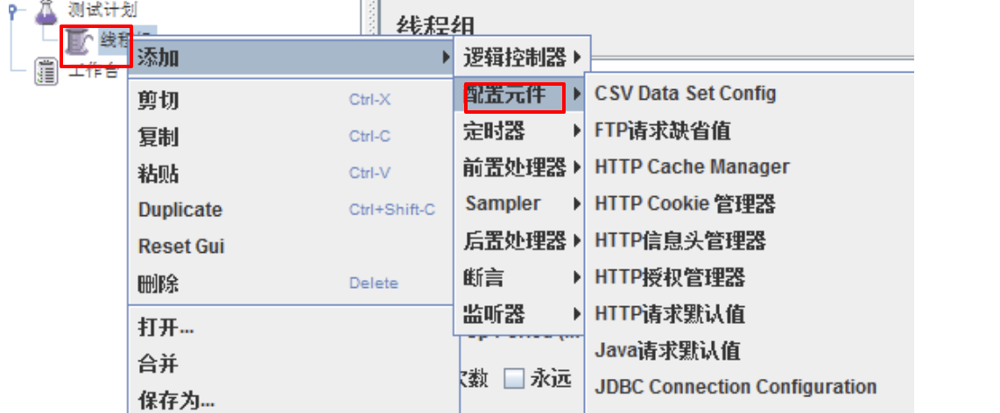
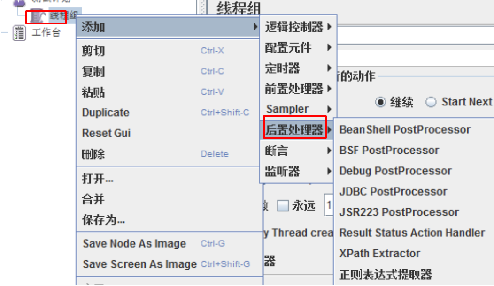

Jmeter 八大元件及执行顺序
目标
- 了解八大元件的作用域
- 知道八大元件的执行顺序
- 掌握每个元件的作用及常用组件
JMeter的主要元件:
- 控制器(Controllers)
- 监听器(Listeners)
- 计时器(Timers)
- 配置元素(Configuration Elements)
- 预处理器元素(Pre-Processor Elements)
- 后处理器元素(Post-Processor Elements)
1. 元件作用域及执行顺序
jmeter是一个开源的性能测试工具，它可以通过鼠标拖拽来随意改变元件之间的顺序以及元件的父子关系，那么随着它们的顺序和所在的域不同，它们在执行的时候，也会有很多不同.
jemter主要依靠测试计划中元件相对位置,来确定作用域.
元件的肤质关系及元件本身类型决定test plan中各元件的执行顺序;元件在test plan中位置不同,可能导致该元件有很大的行为差异.
1.1 元件作用域
在jmeter中，元件的作用域是靠test plan的树形结构中元件的父子关系来确定的，其原则如下：
1）sampler不与其他元件相互作用，因此不存在作用域问题
2）Logic Controller只对其子节点中的sampler和Logic Controller作用
3）除sampler和Logic Controller外的其他元件，如果是某个sampler的子节点，则该元件仅对其父节点作用
4）除sampler和Logic Controller外的其他元件，如果其父节点不是sampler，则其作用域是该元件父节点下的其他所有后带节点（包括子节点，子节点的子节点等）
jmeter中共有8类可被执行的元件（test plan和thread group不属于元件），其中，sampler（取样器）是不与其他元件发生交互的作用的元件，Logic Controller（逻辑控制器）只对其子节点的sampler有效，而其他元件需要与sampler等元件交互。
Config Elements（配置元件）：影响其范围内的所有元件
Pre-porcessors（前置处理器）：在其作用范围内的每一个sampler元件之前执行
Timer（定时器）：对其作用范围内的每一个sampler有效
Post-porcessors（后置处理器）：在其作用范围内的每一个sampler元件之后执行
Assirtions（断言）：对其作用范围内的每一个sampler元件执行后的结果执行校验
Listener（监听器）：收集其作用范围内的每一个sampler元件的信息并且呈现出来
1.2 执行顺序
在同一个作用域范围内,测试计划中的元件按照一下顺序执行:
1.配置元件
2.前置处理器
3.定时器
4.取样器
5.后置处理器
6.断言
7.监听器
注意:
Pre-porcessors、Post-porcessors和Assirtions等元件仅对Sampler作用，如在它们作用域内没有任何Sampler，则不会被执行；
如果在同一作用域范围内有多个同一类型的元件，则这些元件按照它们在test plan中的上下顺序依次执行
2. 八大可执行元件
2.1. 控制器(Controllers)
控制器分为两大类:
- 取样器
- 逻辑控制器
作用: 用这些元件驱动处理一个测试
1.1 取样器(Sampler)
是性能测试中向服务器发送请求，记录响应信息，记录响应时间的最小单元. JMeter 原生支持多种不同的sampler , 每一种不同类型的 sampler 可以根据设置的参数向服务器发出不同类型的请求.
常用的sampler:
1) HTTP请求
2) JDBC Request
3) Debug Sampler
1.2 逻辑控制器

包含两类元件:
- 一类是控制Test Plan中Sampler节点发送请求的逻辑顺序控制器，常用的有：If Controller、Swith Controller、Loop Controller、Random Controller等
- 另一类是用来组织和控制Sampler节点的，如Transaction Controller、Throughput Controller等
2.2 监听器

监听器是对测试结果进行处理和可视化展示的一系列组件.
常用的组件:
1) 察看结果树
2) 聚合报告
3) 断言结果
2.3. 定(计)时器
作用: 设置操作之间的等待时间. 等待时间是性能测试中常用的控制客户端QPS的手段.
常用:
1) Synchronizing Timer
2.4. 配置元件（config Element）

作用: 设置相关请求的静态配置.不用每次都重复配置.
常用的:
1) CSV Data Set Config
2) HTTP请求默认值
3) HTTP信息头管理器
2.5. 前置处理器（Per Processors）

作用: 在实际请求发出前对即将法术的请求进行特殊处理.
例如：Count处理器可以实现自增操作，自增后生成的的数据可以被将要发出的请求使用，而HTTP URL Re—Writing Modifier处理器则可以实现URL重写
1) 用户参数
2.6. 后置处理器（Post Processors）

作用: 对sampler发出请求后得到服务器响应进行处理.一般用来提取响应的特定数据.
常用:
1) 正则表达式提取器
2) XPath Extractor
2.7. 断言（Assertions）

作用: 用于检查测试中得到的响应数据是否符合预期.Assertions一般用来设置检查点，用以保证性能测试过程中的数据交互与预期一致
常用:
1) 响应断言
注意: test plan和thread group不属于元件